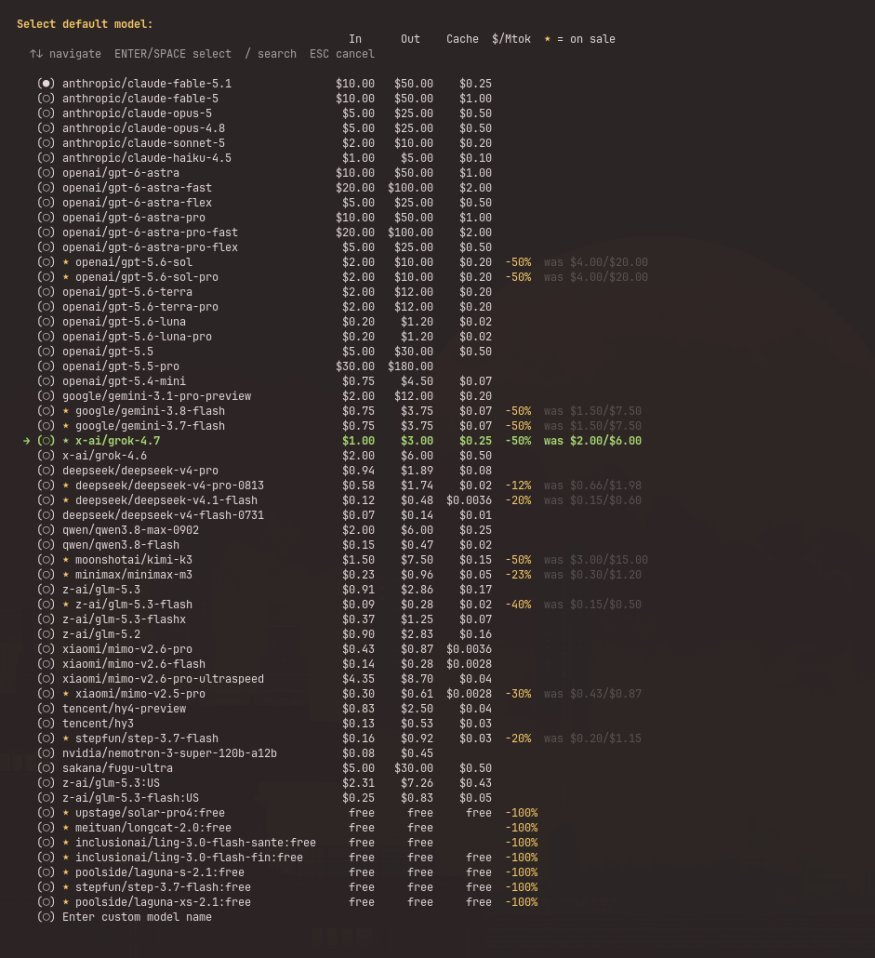

a reminder: a lot of the frontier models are at half their list price on Nous Portal right now.
Grok 4.7, GPT-5.6 Sol and Sol Pro, Gemini 3.8 Flash and 3.7 Flash, Kimi K3.
and a good set of models are free: Ling 3.0 Flash, LongCat 2.0, Laguna S and XS, Step 3.7 Flash, Solar Pro 4.
/model in any chat shows the current price next to the name, and the ones on sale are marked.
Grok 4.7, GPT-5.6 Sol and Sol Pro, Gemini 3.8 Flash and 3.7 Flash, Kimi K3.
and a good set of models are free: Ling 3.0 Flash, LongCat 2.0, Laguna S and XS, Step 3.7 Flash, Solar Pro 4.
/model in any chat shows the current price next to the name, and the ones on sale are marked.
